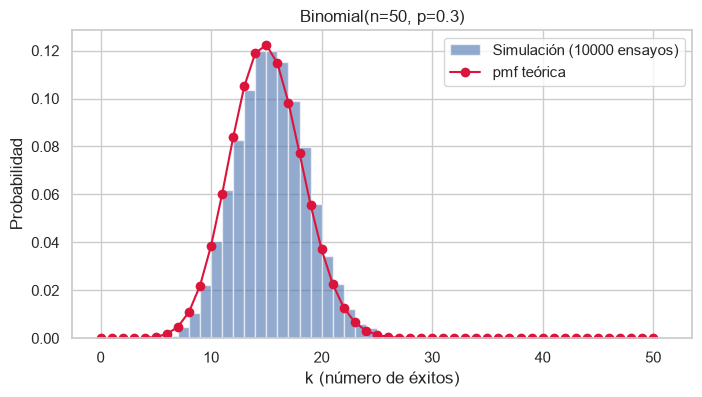
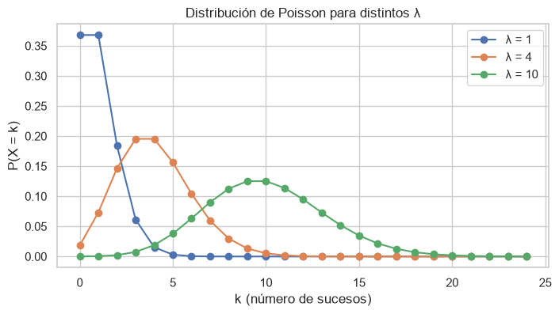
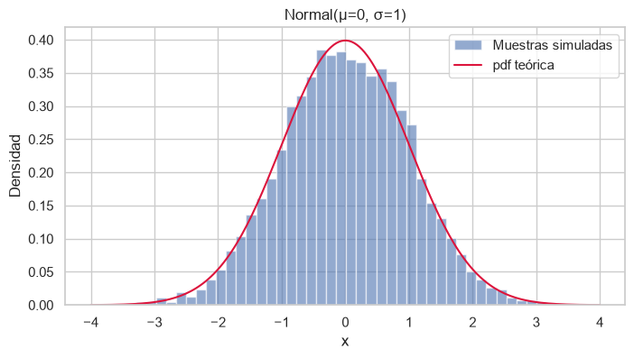
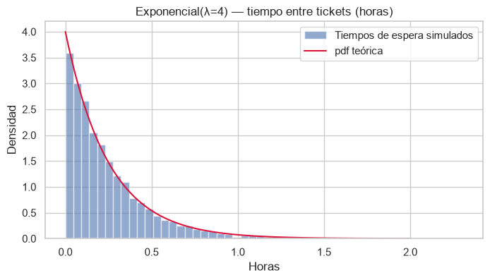
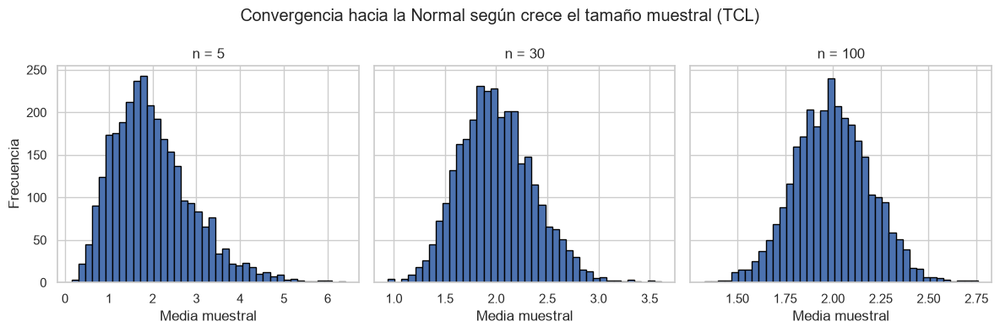

En este cuaderno exploramos de forma práctica las distribuciones vistas en la teoría: visualizamos sus formas, calculamos probabilidades concretas y comprobamos empíricamente el Teorema Central del Límite mediante simulación.
Para trabajar en tu ordenador, descarga el repositorio completo: el cuaderno necesita la librería src/stats_toolkit y los datos del curso. Las instrucciones de instalación están en el archivo README.md.
La celda siguiente solo actúa en Google Colab: descarga el repositorio del curso, instala las bibliotecas que falten y se sitúa en la carpeta de este cuaderno. Si instala o actualiza alguna, te pedirá que reinicies la sesión y vuelvas a ejecutar el cuaderno. En tu ordenador no hace nada.
Código
# Solo en Google Colab: descarga el repositorio del curso (stats_toolkit y datos),# instala las bibliotecas que falten y se sitúa en la carpeta de este cuaderno.# En otro entorno (tu ordenador, la web del curso) no hace nada.import osimport subprocessimport sysif"google.colab"in sys.modules:from importlib.metadata import PackageNotFoundError, version repo ="/content/Curso-de-Estadistica-Basica"ifnot os.path.isdir(repo): subprocess.run(["git", "clone", "--depth", "1","https://github.com/JulioUQ/Curso-de-Estadistica-Basica.git", repo], check=True)# Bibliotecas de cálculo de requirements.txt (Jupyter ya viene con Colab).withopen(f"{repo}/requirements.txt", encoding="utf-8") as f: requisitos = [linea.split("#")[0].strip() for linea in f] requisitos = [r for r in requisitos if r and r notin ("jupyter", "ipykernel", "nbclient", "nbformat")] nombres = [r.split(">=")[0] for r in requisitos]def versiones(): res = {}for n in nombres:try: res[n] = version(n)except PackageNotFoundError: res[n] =Nonereturn res antes = versiones() subprocess.run([sys.executable, "-m", "pip", "install", "-q", *requisitos], check=True) cambiadas = [n for n, v in versiones().items() if v != antes[n]]if cambiadas:print("Se han instalado o actualizado:", ", ".join(cambiadas))print("Reinicia la sesión (menú «Entorno de ejecución») y vuelve a ejecutar el cuaderno.") os.chdir(f"{repo}/notebooks/03_distribuciones")
Código
import syssys.path.append("../../src")import numpy as npimport matplotlib.pyplot as pltimport seaborn as snsfrom stats_toolkit import distributions as distsns.set_theme(style="whitegrid")plt.rcParams["figure.figsize"] = (8, 4.5) # tamaño común de las figuras de una sola gráfica
8.1 Distribución Binomial
Simulamos 50 clientes con probabilidad de conversión \(p = 0.3\) y comparamos la pmf teórica con un histograma de 10.000 simulaciones.
Código
n, p =50, 0.3ks = np.arange(0, n +1)pmf_theoretical = [dist.binomial_pmf(k, n, p) for k in ks]rng = np.random.default_rng(0)samples = rng.binomial(n, p, size=10000)plt.figure(figsize=(8, 4))plt.hist(samples, bins=range(0, n +2), density=True, alpha=0.6, label="Simulación (10000 ensayos)")plt.plot(ks, pmf_theoretical, 'o-', color='crimson', label="pmf teórica")plt.title(f"Binomial(n={n}, p={p})")plt.xlabel("k (número de éxitos)")plt.ylabel("Probabilidad")plt.legend()plt.show()

8.2 Distribución de Poisson
Comparamos la pmf de Poisson para distintos valores de \(\lambda\): fíjate en cómo la forma se vuelve más simétrica (más “normal”) a medida que \(\lambda\) crece.
Código
lambdas = [1, 4, 10]ks = np.arange(0, 25)plt.figure(figsize=(8, 4))for lam in lambdas: pmf_vals = [dist.poisson_pmf(k, lam) for k in ks] plt.plot(ks, pmf_vals, 'o-', label=f"λ = {lam}")plt.title("Distribución de Poisson para distintos λ")plt.xlabel("k (número de sucesos)")plt.ylabel("P(X = k)")plt.legend()plt.show()

8.3 Distribución Normal
Superponemos la pdf teórica sobre un histograma de muestras simuladas, y calculamos una probabilidad acumulada concreta con normal_cdf.
Código
mu, sigma =0, 1samples = rng.normal(mu, sigma, size=5000)xs = np.linspace(-4, 4, 200)pdf_vals = [dist.normal_pdf(x, mu, sigma) for x in xs]plt.figure(figsize=(8, 4))plt.hist(samples, bins=50, density=True, alpha=0.6, label="Muestras simuladas")plt.plot(xs, pdf_vals, color='crimson', label="pdf teórica")plt.title(f"Normal(μ={mu}, σ={sigma})")plt.xlabel("x")plt.ylabel("Densidad")plt.legend()plt.show()p = dist.normal_cdf(x=1.96, mu=0, sigma=1)print(f"P(X <= 1.96) = {p:.4f} (el conocido '97.5%' de la Normal estándar)")

P(X <= 1.96) = 0.9750 (el conocido '97.5%' de la Normal estándar)
8.4 Distribución Exponencial
Simulamos el tiempo entre tickets de soporte consecutivos, con una tasa de llegada \(\lambda = 4\) tickets/hora.
Código
lam =4wait_times = rng.exponential(scale=1/ lam, size=5000)xs = np.linspace(0, 2, 200)pdf_vals = [dist.exponential_pdf(x, lam) for x in xs]plt.figure(figsize=(8, 4))plt.hist(wait_times, bins=50, density=True, alpha=0.6, label="Tiempos de espera simulados")plt.plot(xs, pdf_vals, color='crimson', label="pdf teórica")plt.title(f"Exponencial(λ={lam}) — tiempo entre tickets (horas)")plt.xlabel("Horas")plt.ylabel("Densidad")plt.legend()plt.show()print(f"Tiempo medio de espera esperado: {1/lam:.3f} horas ({60/lam:.1f} minutos)")

Tiempo medio de espera esperado: 0.250 horas (15.0 minutos)
8.5 Comprobando el Teorema Central del Límite
Partimos de una población muy asimétrica (Exponencial) y observamos cómo la distribución de las medias muestrales se acerca a una Normal a medida que crece el tamaño de muestra \(n\).
Código
sample_sizes = [5, 30, 100]fig, axes = plt.subplots(1, 3, figsize=(12, 4), sharey=True)for ax, n inzip(axes, sample_sizes): means = dist.simulate_clt( population="exponential", population_params={"lam": 0.5}, sample_size=n, n_samples=3000, seed=42, ) ax.hist(means, bins=40, edgecolor="black") ax.set_title(f"n = {n}") ax.set_xlabel("Media muestral")axes[0].set_ylabel("Frecuencia")fig.suptitle("Convergencia hacia la Normal según crece el tamaño muestral (TCL)")plt.tight_layout()plt.show()

8.6 Ejercicios propuestos
Una fábrica produce piezas con una tasa de defectos del 2%. Si se inspecciona un lote de 200 piezas, calcula la probabilidad de encontrar exactamente 5 defectuosas usando binomial_pmf, y compárala con la aproximación de Poisson (poisson_pmf con λ = n·p).
Los tiempos de respuesta de una API siguen una distribución Normal con μ = 120 ms y σ = 15 ms. ¿Qué proporción de peticiones tarda más de 150 ms? (usa normal_cdf).
Repite la simulación del TCL de la sección «Comprobando el Teorema Central del Límite» pero partiendo de una población Uniforme y de una Poisson. ¿Cambia la velocidad de convergencia hacia la forma normal?
8.7 Soluciones
Intenta resolver los ejercicios antes de desplegar cada solución. Las soluciones se ejecutan con los mismos datos y semillas que el resto del cuaderno.
TipSolución del ejercicio 1
El número de piezas defectuosas es \(X \sim \text{Binomial}(200; 0{,}02)\). Como \(n\) es grande y \(p\) pequeño, la aproximación de Poisson usa \(\lambda = np = 4\).
Las dos probabilidades son muy parecidas: es el resultado del límite que vimos en la teoría (la Poisson aproxima la Binomial cuando hay muchos ensayos y el suceso es raro).
La velocidad de convergencia depende de la forma de la población. La Uniforme es simétrica y sus medias tienen forma de campana con muestras muy pequeñas. La Poisson con \(\lambda = 3\) es discreta y algo asimétrica: con \(n = 2\) todavía se ven pocos valores posibles, pero con \(n = 30\) ya se parece mucho a una Normal. La Exponencial, la más asimétrica de las tres, es la que necesita muestras mayores.